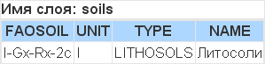

Запрос GetFeatureInfo возвращает информацию об объекте (объектах), расположенных в локации запроса, указанного, например, кликом мыши.
Создание сервиса WMS с помощью MapServer описано в соответствующей статье. Эта статья рассматривает некоторые особенности настройки слоёв WMS, доступных для запросов GetFeatureInfo, которые применяются для получения информации об объектах.
В MapServer результат ответа на запрос GetFeatureInfo может быть представлен в одном из трёх форматов:
Чтобы сообщить MapServer в каком виде вы хотите получить результаты, необходимо в URL как параметр передать нужный формат, например, info_format=application/vnd.ogc.gml. Если в info_format ничего не передавать, то результат будет возвращен в формате text/plain. Далее рассмотрим особенности использования каждого формата.
Вне зависимости от формата ответа, обязательным условием использования запросов является присутствие в разделе LAYER тега "TEMPLATE" с указанием на некоторый файл (фактически, этот файл может быть пустым или вовсе отсутствовать), иначе вы будете получать сообщение об ошибке Requested layer(s) are not queryable. Файл, указанный в этом теге, будет непосредственно использоваться только в случае формата ответа text/html. Соответственно, если используется этот формат, файл должен существовать.
MAP
...
LAYER
...
TEMPLATE template.html
...
END
...
END
Для запроса результатов в этом формате, необходимо передать в URL info_format=text/plain, либо ничего не передавать, так как этот формат ответа используется по умолчанию. Также, по умолчанию результат запроса в text/plain всегда пуст, по причине того, что все атрибутивные поля слоя заблокированы. Чтобы снять блокировку, необходимо воспользоваться недокументированным тегом wms_include_items, поместив его в раздел METADATA объекта LAYER и выставив в значение "all":
MAP
...
LAYER
...
METADATA
...
wms_include_items "all"
...
END
...
END
...
END
Ответ в формате text/plain будет иметь следующий вид:
GetFeatureInfo results: Layer 'soils' Feature 0: gid = '6' id = '3' FAOSOIL = 'I-Gx-Rx-2c' UNIT = 'I' TYPE = 'LITHOSOLS' NAME = 'Литосоли'
Для запроса результатов в этом формате, необходимо передать в URL info_format=text/html. Однако это не всё, если просто передать этот параметр, то в ответ придёт ошибка WMS server error. Unsupported INFO_FORMAT value (text/html). Для устранения этой ошибки в раздел WEB/METADATA должна быть включена инструкция "wms_feature_info_mime_type text/html".
MAP
...
WEB
...
METADATA
...
wms_feature_info_mime_type "text/html"
...
END
...
END
...
END
Чтобы сервер смог вернуть ответ в указанном формате, файл шаблона должен быть оформлен надлежащим образом (в том числе разделен на "HEADER", "TEMPLATE" и "FOOTER"). Условие разнесения шаблона по трём файлам - очень важно, файл, указанный в "HEADER", обрабатывается единожды, в то время как обращение к файлу "TEMPLATE" происходит каждый раз по мере извлечения записей из БД или файла данных, после того, как все записи были извлечены, обрабатывается файл "FOOTER". В файл "HEADER" можно включить, например, ссылку на CSS таблицу и в результате получать достаточно красиво оформленные результаты запросов.
MAP
...
LAYER
...
HEADER header.html
TEMPLATE template.html
FOOTER footer.html
...
END
...
END
Пример содержимого "HEADER" (файл header.html):
<!-- MapServer Template -->
<html>
<head>
<link rel="stylesheet" href="style.css" type="text/css" />
<meta http-equiv="content-type" content="text/html; charset=UTF-8"></meta>
<title>GetFeatureInfo Response</title>
</head>
<body>
<table>
<caption>Имя слоя: soils</caption>
<tbody>
<th>FAOSOIL</th>
<th>UNIT</th>
<th>TYPE</th>
<th>NAME</th>
Пример содержимого "TEMPLATE" (файл template.html, содержит список полей запроса):
<!-- MapServer Template -->
<tr>
<td>[item name=FAOSOIL format=$value escape=none]</td>
<td>[item name=UNIT format=$value escape=none]</td>
<td>[item name=TYPE format=$value escape=none]</td>
<td>[item name=NAME format=$value escape=none]</td>
</tr>
Описание параметров шаблона доступно в документации.
Пример содержимого "FOOTER" (файл footer.html):
<!-- MapServer Template -->
</tbody>
</table>
</body>
</html>
Ответ в формате text/html будет иметь следующий вид:

Для запроса результатов в этом формате, необходимо передать в URL info_format=application/vnd.ogc.gml. Кроме того, в разделе LAYER необходимо выставить тег DUMP в значение TRUE.
MAP
...
LAYER
...
DUMP TRUE
...
END
...
END
По умолчанию, список возвращаемых полей - пуст. Чтобы выбрать нужные поля, воспользуйтесь комбинацией тегов gml_include_items и gml_exclude_items. Следующий пример демонстрирует формирование списка, состоящего из всех полей за исключением одного:
MAP
...
LAYER
...
METADATA
...
gml_include_items "all"
gml_exclude_items "NAME"
...
END
...
END
...
END
При обращении к серверу с указанием данного формата ответа, в ответ вы получите файл в формате GML, который браузер предложит сохранить. В дальнейшем файл может быть просмотрен в любом текстовом редакторе.
Пример GML файла:
<?xml version="1.0" encoding="ISO-8859-1"?>
<msGMLOutput
xmlns:gml="http://www.opengis.net/gml"
xmlns:xlink="http://www.w3.org/1999/xlink"
xmlns:xsi="http://www.w3.org/2001/XMLSchema-instance">
<soils_layer>
<soils_feature>
<gml:boundedBy>
<gml:Box srsName="EPSG:4326">
<gml:coordinates>0.584244,-0.786084 2.134148,-0.056728</gml:coordinates>
</gml:Box>
</gml:boundedBy>
<gid>6</gid>
<id>3</id>
<FAOSOIL>I-Gx-Rx-2c</FAOSOIL>
<UNIT>I</UNIT>
<TYPE>LITHOSOLS</TYPE>
</soils_feature>
</soils_layer>
</msGMLOutput>
Дата создания: 17.04.2010
Автор(ы): Денис Рыков